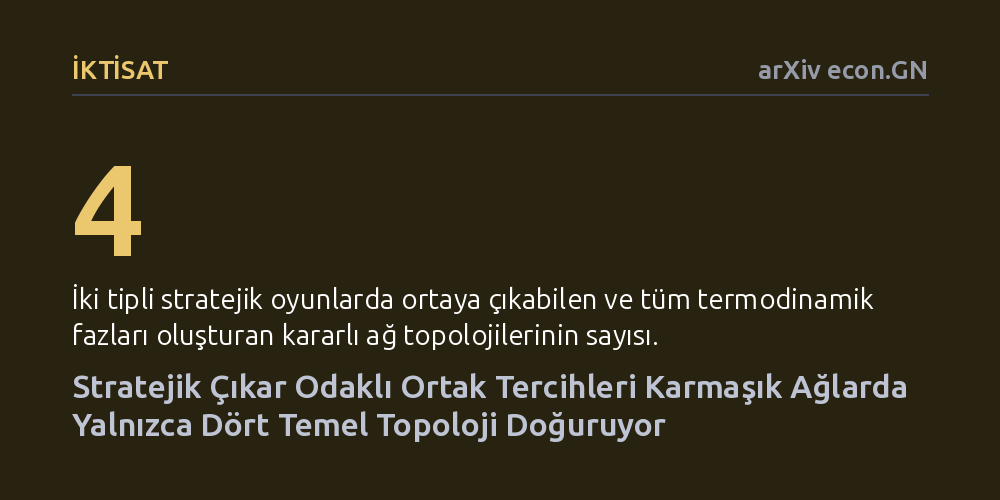

IKTISAT · arXiv econ.GN · 2026-10-21
Araştırmacılar, karmaşık ağlardaki topluluk yapılarının arkasında yatan stratejik mekanizmaları anlamak için çıkar odaklı bir oyun-graf dengesi modeli geliştirdi. Analitik kanıtlar ve ampirik veriler, iki tipli etkileşimlerin yalnızca dört temel ağ topolojisi ürettiğini ve ağların stratejik tercihlerin kalıntısı olduğunu gösterdi.
Bu bulgu, karmaşık ağların tesadüfi süreçlerle değil, bireylerin kendi kazançlarını azamileştirmeye yönelik stratejik tercihlerinin kaçınılmaz bir sonucu olarak şekillendiğini gösteriyor.

Doğada ve toplumda karşımıza çıkan karmaşık ağlar —sosyal çevrelerimizden küresel ticaret yollarına kadar— rastgele dağılmış bağlantılardan oluşmaz. Ağ bilimi uzun yıllardır bu sistemlerin istatistiksel haritasını çıkarabiliyor; hangi düğümün kaç bağlantısı olduğunu veya hangi grupların kümelendiğini ölçebiliyor. Ancak mevcut istatistiksel yaklaşımlar, belirli ağ yapılarının tam olarak hangi temel mekanizmalar yüzünden ortaya çıktığını açıklamakta yetersiz kalıyordu.
Ortada duran temel soru şudur: İnsanlar, şirketler veya ülkeler birbirleriyle bağ kurarken yalnızca rastlantısal tercihlerde mi bulunur, yoksa bu bağlantı kalıpları çıkar odaklı kararların zorunlu bir sonucu mudur? Bu sorunun yanıtı, toplulukların nasıl kurulduğunu ve neden belirli hiyerarşik veya kutuplaşmış yapıların ısrarla tekrarlandığını anlamak açısından büyük bir önem taşıyor.
Araştırmacılar bu soruya yanıt aramak için klasik istatistiksel yöntemlerin ötesine geçerek oyun kuramı temelli yeni bir analitik çerçeve kurdular. "Oyun-graf dengesi" adını verdikleri bu kavram, aktörlerin kendi getirilerini artırmak amacıyla ortak seçtiği dinamik bir sürecin kararlı durma noktasını tanımlıyor. Tıpkı klasik oyun kuramındaki Nash dengesi gibi, bu noktada da hiçbir aktör tek taraflı olarak bağlantısını değiştirerek daha karlı çıkamıyor.
Yazarlar teorik modeli kurduktan sonra, blok modelleme yaklaşımını oyun kuramının düşük boyutlu geometrik kısıtlarıyla sınırlayan bir mekanik çıkarım yöntemi geliştirdiler. Bu yöntem, geleneksel modellerde olduğu gibi dışarıdan yapay karmaşıklık cezaları eklemeye gerek kalmadan kendi kendini düzenleyebiliyor ve uluslararası ticaret gibi ampirik ağ verileri üzerinden geçmiş stratejik etkileşimleri geriye doğru çözebiliyor.
Çalışmanın sunduğu en net analitik bulgu, iki farklı aktör tipinin bulunduğu sistemlerde sistemin yalnızca dört temel ağ yapısına izin verdiğinin matematiksel olarak ispatlanmasıdır. Bu dört yapı; benzerlerin birbirine bağlandığı asortatif yapı, farklıların bağlandığı disasortatif yapı ve iki farklı çekirdek-çevre yapısından oluşuyor. Araştırmacılar, bu yapıların söz konusu sistemlerin eksiksiz termodinamik fazları olduğunu ve K sayıda aktör tipine sahip sistemlerde K^K farklı sınıfa genellendiğini gösteriyor.
Dahası, dışarıdan bakıldığında tamamen aynı görünen çekirdek-çevre topolojilerinin arkasında dört farklı Nash dengesinin yatabileceği ortaya kondu. Getiri dağılımları incelendiğinde, bu yapıların bir kısmının iş birliğine dayalı ortak kazançtan, bir kısmının ise bir tarafın diğerini sömürdüğü asimetrik çıkar dinamiklerinden kaynaklandığı ayırt edilebiliyor. Böylece geleneksel istatistiksel yöntemlerin ayırt edemediği yapısal nüanslar görünür kılınıyor.
Model gerçek dünya ağlarına, özellikle ülkeler arası ticaret verilerine uygulandığında, katı matematiksel kısıtlarına rağmen veriyi son derece yüksek bir uyumla açıklayabildi. Modelin daha önce hiç karşılaşmadığı ağ topolojilerini yeniden eğitime ihtiyaç duymadan başarıyla öngörebilmesi, gerçek dünyadaki karmaşık sistemlerin rastgele değil, getiri odaklı ortak seçimi dinamikleriyle organize edildiğini güçlü biçimde destekliyor.
Bu yaklaşım, ağ biliminde uzun süredir devam eden kavramsal bir belirsizliği de çözüme kavuşturuyor. Bir topluluğu sadece birbiriyle sıkı bağlı düğümler olarak tanımlamak yerine, stratejik denklik üzerinden mekanik bir tanım sunuyor. Yazarların ifadesiyle ağ yapısı, aktörler arasındaki stratejik etkileşimlerin zaman içinde soğuyup donmuş bir fosil kaydı niteliğini taşıyor.